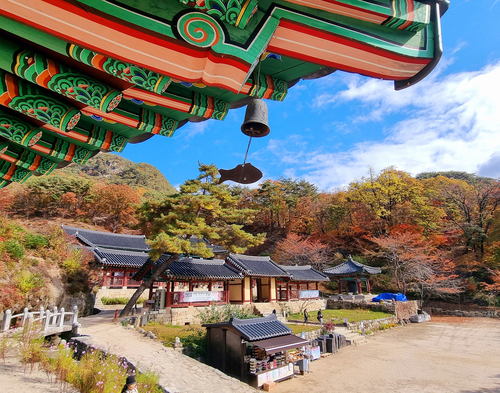
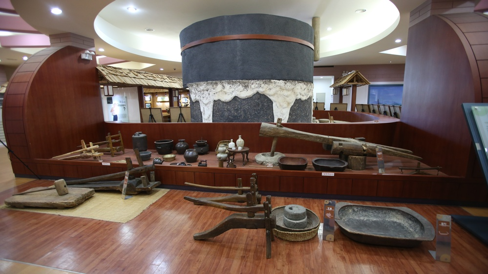
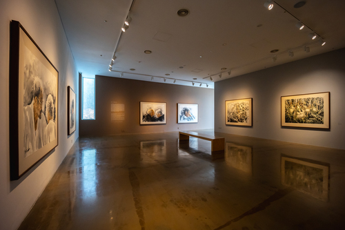

지구를 지켜라 : 1박2일 자연 힐링 여행!
여행코스 설명
춘천은 자연과 문화가 조화롭게 어우러진 도시로, 일상에서 벗어나 몸과 마음을 치유할 수 있는 완벽한 여행지입니다. 이번 1박 2일 코스는 청평사, 춘천막국수체험박물관, 이상원미술관, 남이섬, 물레길 킹카누로 이어지며 자연의 평온함과 감성을 동시에 느낄 수 있도록 구성되었습니다.
여행코스 안내
1일차
- 1 청평사
- 2 막국수체험박물관
- 2 강원도립화목원
2일차
- 1 이상원미술관
- 2 남이섬
- 3 물레길킹카누


청평사
1일차 1코스청평사는 고려 시대의 절로, 고려 광종 24년에 영현선사가 창건하여 백암선원이라 이름하였다가 문종 22년 이의가 춘주도 감찰사가 되어 이 절을 중건하고 보현원이라 하였고 후에 이자현이 중수하여 문수원이라 했다. 소양호 한쪽에 우뚝 솟아 있는 오봉산 기슭에 자리한 청평사는 댐이 생긴 이후 더욱 유명해진 사찰이다. 소양댐에서 배로 15분이 걸리는 섬 속의 절로 각종 교통편을 갈아타는 재미 때문에 젊은 연인들의 데이트 코스로도 인기를 끌고 있다.
- 주소 강원특별자치도 춘천시 오봉산길 810
- 소요시간 90분
- 이용시간 상시이용 가능
- 문의 및 안내 033-244-1095
- 홈페이지 http://cheongpyeongsa.co.kr

막국수체험박물관
1일차 2코스춘천의 대표 향토 음식인 막국수를 테마로 한 춘천막국수체험박물관은 전시관과 체험관으로 구분되어 있다. 1층 전시관은 메밀과 막국수의 유래와 종류, 음식 등 전반적인 것을 확인 할 수 있고, 2층 체험관에서는 고객이 직접 메밀을 반죽하여 전통 방식의 막국수 틀에서 막국수 면을 뽑아 체험한 막국수를 시식할 수 있는 곳으로써 지역 사회의 먹거리 문화를 항상 시키고 지역 상품인 막국수를 세계화와 명품화를 목표로 설립되었다.
- 주소 강원특별자치도 춘천시 사북면 화악지암길 99
- 소요시간 40분
- 이용시간 성수기 10:00~17:00, 비수기 10:00~16:30 / 체험관 10:30~16:30
- 문의 및 안내 033-244-8869
- 홈페이지 https://ccmksmuseum.modoo.at/

강원도립화목원
1일차 3코스공립수목원인 강원특별자치도립화목원은 1996년 조성을 시작하여 1999년에 완공되어 개장하게 되었다. 반비식물원, 암석원, 토피어리원 등 9개 주제원으로 구성되어 있으며 국립수목원으로부터 산림생명자원관리기관으로 지정되어 있다.
- 주소 강원특별자치도 춘천시 화목원길 24
- 소요시간 60분
- 이용시간 하절기(3월~10월) 19:00-18:00 / 동절기(11월~2월) 09:00-17:00
- 문의 및 안내 033-248-6690~1
- 홈페이지 http://gwpa.kr

이상원미술관
2일차 1코스이상원미술관은 2014년 10월 18일 개관한 사립미술관이다. 이상원 화백이 1970년대부터 현재까지 제작한 회화작품을 소장하였고, 한국 미술가들의 다양한 창작품을 보유하고 있다. 이러한 소장품을 바탕으로 이상원 화백의 작품세계를 연구, 보존, 전시함과 더불어 한국미술의 다양성과 역동성을 드러내는 전시를 기획하고 있다.
- 주소 강원특별자치도 춘천시 사북면 화악지암길 99
- 소요시간 60분
-
이용시간
평일 10:00 ~ 18:00
(휴무일 매주 월요일) - 문의 및 안내 033-255-9001
- 홈페이지 http://www.lswmuseum.com

남이섬
2일차 2코스동화 나라 노래의섬 남이섬은 원래는 구릉지로 만들어진 작은 봉우리였다고 한다. 지금은 문화예술 자연생태의 청정 보고이다. 사시사철 다양한 전시프로그램과 문화행사 등을 개최해 오고 있으며, 어린 친구들에게는 꿈과 희망을 심어주고, 연인들에게는 사랑과 아름다운 추억을 선사하는 장소이다.사랑과 아름다운 추억을 선사하는 장소이다.
- 주소 강원특별자치도 춘천시 남이섬길 1
- 소요시간 3시간
- 이용시간 08:00 ~ 21:00
- 문의 및 안내 031-580-8114
- 홈페이지 http://www.namisum.com

물레길 킹카누
2일차 3코스춘천의 자연을 가장 가까이에서 느낄 수 있는 특별한 방법, 바로 춘천 물레길의 킹카누 체험입니다. 물레길은 의암호를 중심으로 펼쳐진 잔잔한 수상길로, 청정한 자연 속에서 색다른 경험을 선사하는 춘천의 대표 수상 레저 명소입니다. 킹카누는 일반 카누와는 달리 크고 안정감 있는 구조 덕분에 초보자도 쉽게 체험할 수 있으며, 물 위에서의 특별한 추억을 쌓기에 안성맞춤입니다.
- 주소 강원특별자치도 춘천시 신동면 풍류1길 156
- 소요시간 60분
- 이용시간 09:00~18:00
- 문의 및 안내 033-264-9923
- 홈페이지 없음